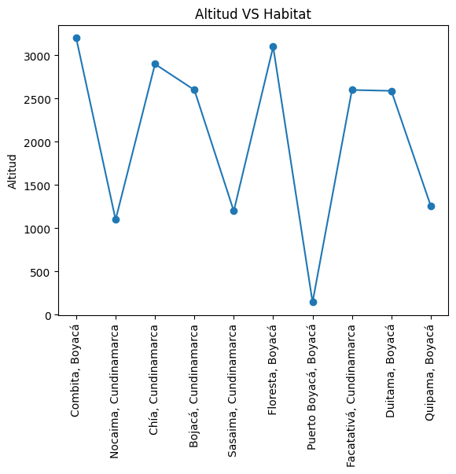

A continuación se mostrarán los avistamientos de especies Nativas y/o Endémicas de los
departamentos de Cundinamarca y Boyacá. Esta región
es muy diversa y cuenta con infinidad de especies. Aquí se mostrarán las principales, entre las
que se cuentan plantas, insectos, reptiles, aves, mamíferos, etc.
Se listarán las principales características de cada especie avistada y el lugar donde fue vista.
Gráfico de tipos de especies |
Gráfico Altidud del habitat |
|  |
Porcentaje de Tipo especies avistadas |